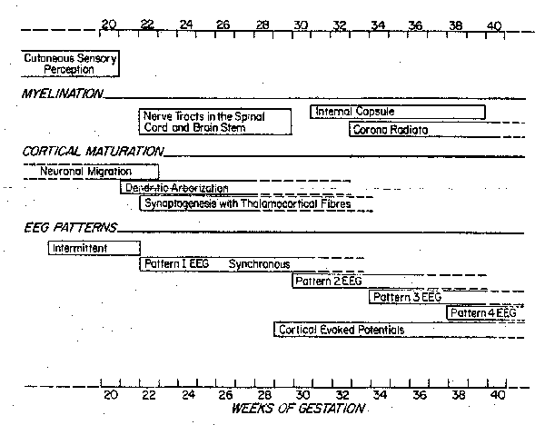

K.J.S. ANAND,
M.B.B.S., D.PHIL., AND P.R. HICKEY,
M.D
From the Department of Anesthesia, Harvard
Medical School, and Children's Hospital, Boston. Address
reprint requests to Dr. Anand at the Department of
Anesthesia, Children's Hospital, 300 Longwood Ave., Boston,
MA 02115.
THE
evaluation of pain in the human fetus and neonate is
difficult because pain is generally defined as a subjective
phenomenon.1 Early studies of neurologic
development concluded that neonatal responses to painful
stimuli were decorticate in nature and that perception or
localization of pain was not present.2 Furthermore, because neonates
may not have memories of painful experiences, they were not
thought capable of interpreting pain in a manner similar to
that of adults.3-5 On a theoretical basis, it
was also argued that a high threshold of painful stimuli may
be adaptive in protecting infants from pain during
birth.6
These traditional views have led to a widespread belief in
the medical community that the human neonate or fetus may not
be capable of perceiving pain.7,8
Strictly speaking,
nociceptive activity, rather than pain,should be discussed
with regard to the neonate, because pain is a sensation with
strong emotional associations. The focus on pain perception
in neonates and confusion over its differentiation from
nociceptive activity and the accompanying physiologic
responses have obscured the mounting evidence that
nociception is important in the biology of the neonate. This
is true regardless of any philosophical view on consciousness
and "pain perception" in newborns. In the literature, terms
relating to pain and nociception are used interchangeably; in
this review, no further distinction between the two will
generally be made.
One
result of the pervasive view of neonatal pain is that
newborns are frequently not given analgesic or anesthetic
agents during invasive procedures, including surgery.9-19 Despite
recommendations to the contrary in textbooks on pediatric
anesthesiology, the clinical practice of inducing minimal or
no anesthesia in newborns, particularly if they are
premature, is widespread.9-19 Unfortunately,
recommendations on neonatal anesthesia are made without
reference to recent data about the development of perceptual
mechanisms of pain and the physiologic responses to
nociceptive activity in preterm and full-term neonates. Even
Robinson and Gregory's landmark paper demonstrating the
safety of narcotic anesthesia in preterm neonates cites
"philosophic objections" rather than any physiologic
rationale as a basis for using this technique.20 Although
methodologic and other issues related to the study of pain in
neonates have been discussed,21-23 the body of scientific
evidence regarding the mechanisms and effects of nociceptive
activity in newborn infants has not been addressed
directly.
ANATOMICAL AND
FUNCTIONAL REQUIREMENTS
FOR PAIN PERCEPTION
The
neural pathways for pain may be traced from sensory receptors
in the skin to sensory areas in the cerebral cortex of
newborn infants. The density of nociceptive nerve endings in
the skin of newborns is similar to or greater than that in
adult skin.24 Cutaneous sensory receptors
appear in the perioral area of the human fetus in the 7th
week of gestation; they spread to the rest of the face, the
palms of the hands, and the soles of the feet by the 11th
week, to the trunk and proximal parts of the arms and legs by
the 15th week, and to all cutaneous and mucous surfaces by
the 20th week.25,26 The spread of cutaneous
receptors is preceded by the development of synapses between
sensory fibers and interneurons in the dorsal horn of the
spinal cord, which first appear during the sixth week of
gestation.27,28 Recent studies using
electron microscopy and immunocytochemical methods show that
the development of various types of cells in the dorsal horn
(along with their laminar arrangement, synaptic
interconnections, and specific neurotransmitter vesicles)
begins before 13 to 14 weeks of gestation and is completed by
30 weeks.29
Lack
of myelination has been proposed as an index of the lack of
maturity in the neonatal nervous system30 and is used frequently to
support the argument that premature or full-term neonates are
not capable of pain perception.9-19 However, even in the
peripheral nerves of adults, nociceptive impulses are carried
through unmyelinate (C-polymodal) and thinly myelinated
(A-delta) fibers.31 Incomplete myelination merely
implies a slower conduction velocity in the nerves or central
nerve tracts of neonates, which is offset completely by the
shorter interneuron and neuromuscular distances traveled by
the impulse.32 Moreover, quantitative
neuroanatomical data have shown that nociceptive nerve tracts
in the spinal cord and central nervous system undergo
complete myelination during the second and third trimesters
of gestation. Pain pathways to the brain stem and thalamus
are completely myelinated by 30 weeks; whereas the
thalamocortical pain fibers in the posterior limb of the
internal capsule and corona radiata are myelinated by 37
weeks.33
Development of the fetal neocortex begins at 8 weeks
gestation, and by 20 weeks each cortex has a full complement
of 109 neurons.34 The
dendritic processes of the cortical neurons undergo profuse
arborizations and develop synaptic targets for the incoming
thalamocortical fibers and intracortical connections.35,36 The
timing of the thalamocortical connection is of crucial
importance for cortical perception, since most sensory
pathways to the neocortex have synapses in the thalamus.
Studies of primate and human fetuses have shown that afferent
neurons in the thalamus produce axons that arrive in the
cerebrum before mid-gestation. These fibers then "wait" just
below the neocortex until migration and dendritic
arborization of cortical neurons are complete and finally
establish synaptic connections between 20 and 24 weeks of
gestation (Fig. 1).36-38
Functional maturity of the cerebral cortex is suggested by
fetal and a neonatal electroencephalographic patterns,
studies of cerebral metabolism, and the behavioral
development of neonates. First, intermittent
electroencephalograpic bursts in both cerebral hemispheres
are first seen at 20 weeks gestation; they become sustained
at 22 weeks and bilaterally synchronous at 26 to 27
weeks.39
By 30 weeks, the distinction between wakefulness and sleep
can be made on the basis of electroencephalo- graphic
patterns.39,40 Cortical components of
visual and auditory evoked potentials have been recorded in
preterm babies (born earlier than 30 weeks of
gestation),40,41 whereas olfactory and
tactile stimuli may also cause detectable changes in
electroencephalograms of neonates.40,42 Second, in vivo
measurements of cerebral glucose utilization have shown that
maximal metabolic activity in located in sensory areas of the
brain in neonates (the sensorimotor cortex, thalamus, and mid
brain- brain-stem regions), further suggesting the functional
maturity of these regions.43 Third, several forms of
behavior imply cortical function during fetal life.
Well-defined periods of quiet sleep, active sleep, and
wakefulness occur in utero beginning at 28 weeks of
gestation.44 In addition to the specific
behavioral responses to pain described below, preterm and
full-term babies have various cognitive, coordinative, and
associative capabilities in response to visual and auditory
stimuli, leaving no doubt about the presence of cortical
function.45
Several lines of evidence suggest that the complete nervous
system is active during prenatal development and that
detrimental and developmental changes in any part would
affect the entire system.25,26,42,46 In studies in
animals, Ralston found that somatosensory neurons of the
neocortex respond to peripheral noxious stimuli and proposed
that "it does not appear necessary to postulate a subcortical
mechanism for appreciation of pain in the fetus or
neonate."47 Thus, human newborns do have
the anatomical and functional components required for the
perception of painful stimuli. Since these stimuli may
undergo selective transmission, inhibition, or modulation by
various neurotransmitters, the neurochemical mechanisms
associated with pain pathways in the fetus and newborn are
considered below.

Figure 1. Schematic Diagram of
the Development of Cutaneous Sensory Perception,25
Myelination of the Pain Pathways,32 Maturation of the Fetal
Neocortex,33-37 and
Electroencephalographic Patterns38-40 in the Human Fetus and
Neonate.
NEUROCHEMICAL SYSTEMS ASSOCIATED WITH
PAIN PERCEPTION
The Tachykinin
System
Various putative neurotransmitters called the tachykinins
(substance P, neurokinin A, neuromedin K, and so forth) have
been identified in the central nervous system, but only
substance P has been investigated thoroughly and shown to
have a role in the transmission and control of pain
impulses.48-56 Neural elements containing
substance P and its receptors appear in the dorsal-root
ganglia and dorsal horns of the spinal cord at 12 to 16 weeks
of gestation.57 A high density of substance P
fibers and cells have been observed in multiple areas of the
fetal bran stem associated with pathways for pain perception
and control and visceral reactions to pain.58-63 Substance
P fibers and cells have also been found in the hypothalamus,
mamillary bodies, thalamus, and cerebral cortex of human
fetuses early in the development.58 Many studies have found
higher densities of substance P and it receptors in neonates
than in adults of the same species, although the importance
of this finding is unclear.61,64-68
The Endogenous Opioid
System
With
the demonstration of the existence of stereospecific opiate
receptors69,70 and their endogenous
ligands,71 the control of pain was
suggested as a primary role for the endogenous opioid
system.72
Both the enkephalinergic and the endorphinergic systems may
modulate pain transmission at spinal and supraspinal
levels.56,73 In the human fetus,
however, there are no data on the ontogeny and distribution
of specific cells, fibers, and receptors (mu-, delta-, and
kappa opiate receptors) that are thought to mediate the
antinociceptive effects of exogenous and endogenous
opioids.74 However, functionally mature
endorphinergic cells in fetal pituitary glands have been
observed at 15 weeks of gestation and possibly earlier.75,76
Beta-endorphin and beta-lipotropin were found to be secreted
from fetal pituitary cells at 20 weeks in response to in
vitro stimulation by corticotropin- releasing factor.77 In addition,
more production of beta-endorphin may occur in fetal and
neonatal pituitary glands than in adult glands.78-79
Endogenous opioids are released in the human fetus at birth
and in response to fetal and neonatal distress.80
Umbilical-cord plasma levels of beta-endorphin and
beta-lipotropin from healthy full-term neonates delivered
vaginally or by cesarean section have been shown to be three
to five times higher than plasma levels in resting
adults.78,81 Neonates delivered
vaginally by breech presentation or vacuum extraction had
further increases in beta-endorphin levels, indication
beta-endorphin secretion in response to stress at birth.82 Plasma
beta-endorphin concentrations correlated negatively with
umbilical-artery pH and partial pressure of oxygen and
positively with base deficit and partial pressure of carbon
dioxide, suggesting that birth asphyxia may be a potent
stimulus to the release of endogenous opioids.81,83-87
Cerebrospinal fluid levels of beta-endorphin were also
increased markedly in newborns with apnea of
prematurity,88-90 infections, or
hypoxemia.83,91,92 These elevated values
may have been caused by the "stress" of illness,93 the pain
associated with these clinical conditions, or the invasive
procedures required for their treatment. However, these high
levels of beta-endorphin are unlikely to decrease anesthetic
or analgesic requirements,94 because the cerebrospinal
fluid levels of beta-endorphin required to produce analgesia
in human adults have been found to be 10,000 times higher
than the highest recorded levels in neonates.95
The
high levels of beta-endorphin and beta-lipotropin in cord
plasma decreased substantially by 24 hours after birth87,96 and
reached adult levels by five days, whereas the levels in the
cerebrospinal fluid fell to adult values in 24 hours.87,97,98 In
newborn infants of women addicted to narcotics, massive
increases in plasma concentrations of beta-endorphin,
beta-lipotropin, and metenkephalin occurred within 24 hours,
with some values reaching 1000 times those in resting adults.
Markedly increased levels persisted for up to 40 days after
birth.87
However, these neonates were considered to be clinically
normal, and no behavioral effects were observed (probably
because of the development of prenatal opiate tolerance).
PHYSIOLOGIC CHANGES ASSOCIATED WITH
PAIN
Cardiorespiratory
Changes
Changes in cardiovascular variables, transcutaneous partial
pressure of oxygen, and palmar sweating have been observed in
neonates undergoing painful clinical procedures. In preterm
and full-term neonates undergoing circumcision99,100 or heel
lancing,101-103 marked increases in the
heart rate and blood pressure occurred during and after the
procedure. The magnitude of changes in the heart rate was
related to the intensity and duration of the stimulus104 and to the
individual temperaments of the babies.105 The administration of local
anesthesia to full-term neonates undergoing circumcision
prevented the changes in heart rate and blood pressure,99,100,106
whereas giving a "pacifier" to preterm neonates during
heel-stick procedures did not alter their cardiovascular or
respiratory responses to pain.101 Further studies in newborn
and older infants showed that noxious stimuli were associated
with an increase in heart rate, whereas non-noxious stimuli
(which elicited the attention or orientation of infants)
caused a decrease in heart rate.22,107,108
Large
fluctuations in transcutaneous partial pressure of oxygen
above and below an arbitrary "safe" range of 50 to 100 mm Hg
have been observed during various surgical procedures in
neonates.109-111 Marked decreases in
transcutaneous partial pressure of oxygen also occurred
during circumcision,106,112 but such changes were
prevented in neonates given local analgesic agents.100,106,112
Tracheal intubation in awake preterm and full-term neonates
caused a significant decrease in transcutaneous partial
pressure of oxygen, together with increases in arterial blood
pressure113-115 and intracranial
pressure.116 The increases in
intracranial pressure with intubation were abolished in
preterm neonates who were anesthetized.117 In addition, infants'
cardiovascular responses to tracheal suctioning were
abolished by opiate-induced analgesia.118
Palmar sweating has also been validated as a physiologic
measure of the emotional state in full-term babies and has
been closely related to their state of arousal and crying
activity. Substantial changes in palmar sweating were
observed in neonates undergoing heel-sticks for blood
sampling, and subsequently, a mechanical method of heel
lancing proved to be less painful than manual methods, on the
basis of the amount of palmar sweating.120
Hormonal and Metabolic
Changes
Hormonal and metabolic changes have been measured primarily
in neonates undergoing surgery, although there are limited
data on the neonatal responses to venipuncture and other
minor procedures. Plasma renin activity increased
significantly 5 minutes after venipuncture in full-term
neonates and returned to basal levels 60 minutes thereafter;
no changes occurred in the plasma levels of cortisol,
epinephrine, or norepinephrine after venipuncture.121 In preterm
neonates receiving ventilation therapy, chest physiotherapy
and endotracheal suctioning produced significant increases in
plasma epinephrine and norepinephrine; this response was
decreased in sedated infants.122 In neonates undergoing
circumcision without anesthesia, plasma cortisol levels
increased markedly during and after the procedure.123,124
Similar changes in cortisol levels were not inhibited in a
small number of neonates given a local anesthetic,125 but the
efficacy of the nerve block was questionable in these
cases.
Further detailed hormonal studies126 in preterm and full-term
neonates who underwent surgery under minimal anesthesia
documented a marked release of catecho- lamines,127 growth
hormone,128 glucagon,127 cortisol,
aldosterone, and other corticosteroids,129,130 as well as suppression
of insulin secretion.131 These responses resulted in
the breakdown of carbohydrate and fat stores,127,132,133
leading to severe and prolonged hyperglycemia and marked
increases in blood lactate, pyruvate, total ketone bodies,
and nonesterified fatty acids. Increased protein breakdown
was documented during and after surgery by changes in plasma
amino acids, elevated nitrogen excretion, and increased
3-methyl- histidine:creatinine ratios in the urine (Anand
KJS, Aynsley-Green A: unpublished data). Marked differences
also occurred between the stress responses of premature and
full-term neonates (Anand KJS, Aynsley-Green A: unpublished
data) and between the responses of neonates undergoing
different degrees of surgical stress.134 Possibly because of the
lack of deep anesthesia, neonatal stress responses were found
to be three to five times greater than those in adults,
although the duration was shorter.126 These stress responses
could be inhibited by potent anesthetics, as demonstrated by
randomized, controlled trials of halothane and fentanyl.
These trials showed that endocrine and metabolic stress
responses were decreased by halothane anesthesia in full-term
neonates 35 and abolished by low-dose fentanyl anesthesia in
preterm neonates.136 The stress responses of
neonates undergoing cardiac surgery were also decreased in
randomized trials of high-dose fentanyl and sufentanil
anesthesia.126,137,138 These results
indicated that the nociceptive stimuli during surgery
performed with minimal anesthesia were responsible for the
massive stress responses of neonates. Neonates who were given
potent anesthetics in these randomized trials were more
clinically stable during surgery and had fewer postoperative
complications as compared with neonates under minimal
anesthesia.126,129 There is preliminary
evidence that the pathologic stress responses of neonates
under light anesthesia during major cardiac surgery may be
associated with an increased postoperative morbidity and
mortality (Anand KJS, Hickey PR: unpublished data). Changes
in plasma stress hormones (e.g., cortisol) can also be
correlated with the behavioral states of newborn
infants,124,139,140 which are important
in the postulation of overt subjective distress in neonates
responding to pain.
BEHAVIORAL CHANGES ASSOCIATED WITH
PAIN PERCEPTION
Simple Motor
Responses
Early
studies of the motor responses of newborn infants to
pinpricks reported that the babies responded with a "diffuse
body movement" rather than a purposeful withdrawal of the
limb,2
whereas other studies found reflex withdrawal to be the most
common response.141-143 More recently, the
motor responses of 24 healthy full-term neonates to a
pinprick in the leg were reported to be flexion and adduction
of the upper and lower limbs associated with grimacing,
crying, or both, and these responses were subsequently
quantified.144,145 Similar responses have
also been documented in very premature neonates, and in a
recent study, Fitzgerald et al. found that premature neonates
(<30 weeks) not only had lower thresholds for a flexor
response but also had increased sensitization after repeated
stimulation.146
Facial
Expressions
Distinct facial expressions are associated with pleasure,
pain, sadness, and surprise in infants.147 These expressions,
especially those associated with pain, have been objectively
classified and validated in a study of infants being
immunized.102,148 With use of another
method of objectively classifying facial expressions of
neonates, different responses were observed with different
techniques of heel lancing and with different behavioral
states149 (and Grunau RVE, Craig KD:
unpublished data). These findings suggest that the neonatal
response to pain is complex and may be altered by the
behavioral state and other factors at the time of the
stimulus.150
Crying
Crying is the primary method of communication in newborn
infants and is also elicited by stimuli other than pain.151 Several
studies have classified infant crying according to the type
of distress indicated and its spectrographic properties.152-154 These
studies have shown that cries due to pain, hunger, or fear
can be distinguished reliably by the subjective evaluation of
trained observers and by spectrographic analysis.155-160 This
has allowed the cry response to be used as a measure of pain
in numerous recent studies. 22,99,100,102,106,152
The
pain cry has specific behavioral characteristics and
spectrographic properties in healthy full-term neonates.161-164 Pain
cries of preterm neonates and neonates with neurologic
impairment, hyperbilirubinemia, or meningitis are
considerably different, thereby indicating altered cortical
function in these babies.165-168 Changes in the patterns
of neonatal cries have been correlated with the intensity of
pain experienced during circumcision and were accurately
differentiated by adult listeners.169 In other studies of the
painful procedures, neonates were found to he more sensitive
to pain than older infants (those 3 to 12 months old) but had
similar latency periods between exposure to a painful
stimulus and crying or another motor response.99-101,103,152,170 This supports
the contention that slower conduction speed in the nerves of
neonates is offset by the smaller inter-neuron distances
traveled by the impulse.
Complex Behavioral
Responses
Alterations in complex behavior and sleep-wake cycles have
been studied mainly in newborn infants undergoing
circumcision without anesthesia. Emde and coworkers observed
that painful procedures were followed by prolonged periods of
non-rapid-eye-movement sleep in newborns and confirmed these
observations in a controlled study of neonates undergoing
circumcision without anesthesia.171 Similar observations have
been made in adults with prolonged stress. Other subsequent
studies have found increased wakefulness and irritability for
an hour after circumcision, an altered arousal level in
circumcised male infants as compared with female and
uncircumcised male infants, and an altered sleep-wake state
in neonates undergoing heel-stick procedures.103,172,173 In
a double-blind, randomized controlled study using the
Brazelton Neonatal Behavioral Assessment Scale, 90 percent of
neonates had changed behavioral states for more than 22 hours
after circumcision, whereas only 16 percent of the
uncircumcised infants did.174 It was therefore proposed
that such painful procedures may have prolonged effects on
the neurologic and psychosocial development of neonates.175 A similar
randomized study showed the absence of these behavioral
changes in neonates given local anesthetics for
circumcision.176 For two days after
circumcision, neonates who had received anesthetics were more
attentive to various stimuli and had greater orientation,
better motor responses, decreased irritability, and a greater
ability to quiet themselves when disturbed. A recent
controlled study showed that intervention designed to
decrease the amount of sensory input and the intensity of
stressful stimuli during intensive care of preterm neonates
was associated with improved clinical and developmental
outcomes.177 Because of their social
validity and communicational specificity, the behavioral
responses observed suggest that the neonatal response to pain
is not just a reflex response.178-180
MEMORY OF PAIN IN NEONATES
The
persistence of specific behavioral changes after circumcision
in neonates implies the presence of memory. In the short
term, these behavioral changes may disrupt the adaptation of
newborn infants to their postnatal environment,174-176 the
development of parent-infant bonding, and feeding
schedules.182,183 In the long term,
painful experiences in neonates could possibly lead to
psychological sequelae,22 since several workers have
shown that newborns may have a much greater capacity for
memory than was previously thought.183-186
Pain
itself cannot be remembered, even by adults187; only the
experiences associated with pain can be recalled. However,
the question of memory is important, since it has been argued
that memory traces are necessary for the "maturation" of pain
perception,3 and a painful experience may
not be deemed important if it is not remembered. Long-term
memory requires the functional integrity of the limbic system
and diencephalon (specifically, the hippocampus, amygdala,
anterior and mediodorsal thalamic nuclei, and mamillary
nuclei)188; these structures are well
developed and functioning during the newborn period.42 Furthermore,
the cellular, synaptic, and molecular changes required for
memory and learning depend on brain plasticity, which is
known to be highest during the late prenatal and neonatal
periods.189,190 Apart from excellent
studies in animals demonstrating the long-term effects of
sensory experiences in the neonatal period,191 evidence
for memories of pain in human infants must, by necessity, be
anecdotal.178,192,193 Early painful
experiences may be stored in the phylogenically old
"procedural memory," which is not accessible to conscious
recall.182,183,194 Although Janov195 and
Holden196 have collected clinical
data that they claim indicate that adult neuroses or
psychosomatic illnesses may have their origins in painful
memories acquired during infancy or even neonatal life, their
findings have not been substantiated or widely accepted by
other workers.
CONCLUSIONS
Numerous lines of evidence suggest that even
in the human fetus, pain pathways as well as cortical and
subcortical centers necessary for pain perception are well
developed late in gestation, and the neurochemical systems
now known to be associated with pain transmission and
modulation are intact and functional. Physiologic responses
to painful stimuli have been well documented in neonates of
various gestational ages and are reflected in hormonal,
metabolic, and cardiorespiratory changes similar to but
greater than those observed in adult subjects. Other
responses in newborn infants are suggestive of integrated
emotional and behavioral responses to pain and are retained
in memory long enough to modify subsequent behavior
patterns.
None
of the data cited herein tell us whether neonatal nociceptive
activity and associated responses are experienced
subjectively by the neonate as pain similar to that
experienced by older children and adults. However, the
evidence does show that marked nociceptive activity clearly
constitutes a physiologic and perhaps even a psychological
form of stress in premature or full-term neonates.
Attenuation of the deleterious effects of pathologic neonatal
stress responses by the use of various anesthetic techniques
has now been demonstrated. Recent editorials addressing these
issues have promulgated a wide range of opinions, without
reviewing all the available evidence.197-201 The evidence summarized
in this paper provides a physiologic rationale for evaluating
the risks of sedation, analgesia, local anesthesia, or
general anesthesia during invasive procedures in neonates and
young infants. Like persons caring for patients of other
ages, those caring for neonates must evaluate the risks and
benefits of using analgesic and anesthetic techniques in
individual patients. However, in decisions about the use of
these techniques, current knowledge
suggests that humane considerations should apply as
forcefully to the care of neonates and young, nonverbal
infants as they do to children and adults in similar painful
and stressful situations.
REFERENCES
- Menskey H,
Albe-Fessard DG, Bonica JJ, et al. Pain terms: a list with
definitions and notes on usage: recommended by the IASP
Subcommittee on Taxonomy. Pain 1979; 6:249-52.
- McGraw MD. The
neuromuscular maturation of the human infant. New York:
Columbia University Press, 1943.
- Merskey H. On the
development of pain. Headache 1970; 10:116-23.
- Levy DM. The infant's
earliest memory of inoculation: a contribution to public
health procedures. J Gen Psychol 1960; 96:3-46.
- Harris FC, Lahey BB.
A method for combining occurrence and nonoccurrence
interobserver agreement scores. J Appl Behav Anal
1978; 11: 523-7.
- Bondy AS. Infancy.
In: Gabel S, Erickson MT, eds. Child development and
developmental disabilities. Boston: Little, Brown,
1980:3-19.
- Eland JM, Anderson
JE. The experience of pain in children. In: Jacox AK, ed.
Pain: a source book for nurses and other health
professionals . Boston: Little, Brown,
1977:453-73.
- Wallerstein E. Circumcision: the
uniquely American medical enigma. Urol Clin N Am
1985; 12:123- 32.
- Anand KJS,
Aynsley-Green A. Metabolic and endocrine effects of
surgical ligation of patent ductus arteriosus in the human
preterm neonate: Are there implications for further
improvement of postoperative outcome? Mod Probl
Paediatr 1985; 23:143-57.
- Lippmann N, Nelson
RJ, Emmanouilides GC, Diskin J, Thibeault DW. Ligation of
patent ductus arteriosus in premature infants. Br J
Anaesth 1976; 48:365-9.
- Shaw EA. Neonatal
anaesthesia. Hosp Update 1982;8:423-34.
- Katz J. The
question of circumcision. Int Surg 1977;
62:490-2.
- Swafford LI, Allan
D. Pain relief in the pediatric patient. Med Clin North
Am 1968; 52:131-6.
- Rees GJ.
Anesthesia in the newborn. Br Med J 1950;
2:1419-22.
- Betts EK, Downes
JJ. Anesthetic considerations in newborn surgery. Semin
Anesth 1984; 3:59-74.
- Inkster JS.
Paediatric anaesthesia and intensive care. Int
Anesthesiol Clin 1978; 16:58-91.
- Norman EA. Pulse
oximetry during repair of congenital diaphragmatic hernia.
Br J Anaesth 1986; 58:934-5.
- Hatch DJ.
Analgesia in the neonate. Br Med J 1987;
294:920.
- Shearer MH.
Surgery on the paralysed, unanesthetized newborn.
Birth 1986; 13:79.
- Robinson S,
Gregory GA. Fentanyl-air-oxygen anesthesia for ligation of
patent ductus arteriosus in preterm infants. Anesth
Analg 1981; 60:331-4.
- Weiss C. Does
circumcision of the newborn require an anesthetic? Clin
Pediatr (Phila) 1968; 7:128-9.
- Owens ME. Pain in
infancy: conceptual and methodological issues.Pain
1984; 20:213-30.
- Richards T. Can a
fetus feel pain? Br Med J 1985; 291:1220-1.
- Gleiss J, Stuttgen
G. Morphologic and functional development of the skin. In:
Stave U, ed. Physiology of the perinatal period .
Vol. 2. New York: Appleton-Century Crofts,
1970:889-906.
- Humphrey T. Some
correlations between the appearance of human fetal reflexes
and the development of the nervous system. Prog Brain
Res 1964; 4:93-135.
- Valnaan HB,
Pearson JF. What the fetus feels. Br Med J 1980;
280:233-4.
- Okado N. Onset of
synapse formation in the human spinal cord. J Comp
Neurol 1981; 201:211-9.
- Wozniak W,
O'Rahilly R, Olszewska B. The fine structure of the spinal
cord in human embryos and early fetuses. J
Hirnforsch 1980; 21:101-24.
- Rievi T, Wadhwa S,
Bijlani V. Development of spinal substrate for nociception.
Pain Suppl 1987;
4:195.
- Tilney F, Rosett
J. The value of brain lipoids as an index of brain
development. Bull Neurol Inst NY 1931; 1:28-71.
- Schulte FJ.
Neurophysiological aspects of brain development. Mead
Johnson Symp Perinat Dev Med 1975; 6:38-47.
- Idem. Gestation,
wachsturn und hirnentwicklung. In: Linneweh F, ed.
Fortscritte der Paedologie. Vol. 2. Berlin:
Springer-Verlag, 1968:46-64.
- Gilles FJ, Shankle
W, Dooling EC. Myelinated tracts: growth patterns. In:
Gilles FH, Leviton A, Dooling EC, eds. The developing
human brain: growth and epidemiologic neuropathology.
Boston: John Wright, 1983: 117-83.
- Marin-Padilla M.
Structural organization of the human cerebral cortex prior
to the appearance of the cortical plate. Anat
Embryol (Berl) 1983; 168:21-40.
- Molliver ME,
Kostovic I, Van der Loos H. The development of synapses in
cerebral cortex of the human fetus. Brain Res 1973;
50:403-7.
- Rakic P,
Goldman-Rakic PS. Development and modifiability of the
cerebral cortex: early developmental effects: cell
lineages, acquisition of neuronal positions, and areal and
larninar development. Neurosci Res Prog Bull 1982;
20:433-51.
- Kostovic I, Rakic
P. Development of prestriate visual projections in the
monkey and human fetal cerebrum revealed by transient
cholinesterase staining. J Neurosci 1984;
4:25-42.
- Kostovic I,
Goldman-Rakic PS. Transient cholinesterase staining in the
mediodorsal nucleus of the thalamus and its connections in
the developing human and monkey brain. J Comp Neurol
1983; 219:431-47.
- Spehlmann R. In:
EEG primer. New York: Elsevier/North-Holland,
1981:159-65.
- Torres F, Anderson
C. The normal EEG of the human Newborn. J Clin
Neurophysiol 1985; 2:89-103.
- Henderson-Smart
DJ, Pettigrew AG, Campbell DJ. Clinical apnea and
brain-stem neural function in preterm infants. N Engl J
Med 1983; 308:353-7.
- Prechtl HFR, ed.
Continuity of neural functions from prenatal to
postnatal life. Oxford: Blackwell, 1984.
- Chugani HT, Phelps
ME. Maturational changes in cerebral function in infants
determined by 18FDG positron emission tomography.
Science 1986; 231:840-3.
- Arduini D, Rizzo
G, Giorlandino C, Valensise H, Dell'acqua S, Romanini C.
The development of fetal behavioural states: A longitudinal
study. Prenat Diagn 1986; 6:117-24.
- Sammons WAH.
Premature behavior and the neonatal intensive care unit
environment. In: Cloherty JP, Stark AR, eds. Manual of
neonatal care. Boston: Little, Brown, 1980:359-63.
- Flower MJ.
Neuromaturation of the human fetus. J Med Philos
1985; 10:237-51.
- Ralston HJ.
Synaptic organization of spinothalamic projections to the
thalamus, with special reference to pain. Adv Pain Res
Ther 1984; 6:183-95.
- Nawa H, Hirose T,
Takashima H, Inayama S, Nakanishi S. Nucleotide sequences
of cloned cDNAs for two types of bovine brain substance P
precursor. Nature 1983; 306:32-6.
- Watson SP,
Sandberg BEB, Hanley MR, Iversen LL. Tissue selectivity of
substance P alkyl esters: suggesting multiple receptors.
Eur J Pharmacol 1983; 87:77-84.
- Mantyh PW, Maggio
JE, Hunt SP. The autoradiographic distribution of kassinin
and substance K binding sites is different from the
distribution of substance P binding sites in rat brain.
Eur J Pharmacol 1984;102:361-4.
- Valentino KL,
Tatemoto K, Hunter J, Barchas JD. Distribution of
neuropeptide K-immunoreactivity in the rat central nervous
system. Peptides 1986: 7:1043-59.
- Pernow B.
Substance P. Pharmacol Rev 1983; 35:85-141.
- Otsuka M, Konishi
S. Substance P - the first peptide neurotransmitter?
Trends Neurosci 1983; :317-20.
- Henry JL. Relation
of substance P to pain transmission: neurophysiological
evidence. In: Porter R, O'Connor M, eds. Substance P in
the nervous system, Ciba Foundation Symposium 91.
London: Pitman, 1982:206-24.
- Pearson J,
Brandeis L, Cuello AC. Depletion of substance P-containing
axons in substantia gelatinosa of patients with diminished
pain sensitivity. Nature 1982; 295:61-3.
- Jessel T, Iversen
LL. Opiate analgesics inhibit substance P release from rat
trigeminal nucleus. Nature1977; 268:549-51.
- Chamay Y, Paulin
C, Chayvialle J-A, Dubois PM. Distribution of substance
P-like immunoreactivity in the spinal cord and dorsal root
ganglia of the human foetus and infant. Neuroscience
1983; 10:41-55.
- Paulin C, Chamay
Y, Dubois PM, Chayvialle J-A. Localisation de substance P
dans le systeme nerveux du foetus humain: resultats
preliminaires. C R Acad Sci Paris Series D 1980; 291:257-60.
- Pickel VM, Sumal
KK, Reis DJ, Miller RI, Hervonen A. Immunocytochemical
localization ofenkephalin and substance Pin the dorsal
tegmental nuclei in the human fetal brain. J Comp
Neurol 1980; 193:805-14.
- Roizen MF,
Newfield P, Eger El II, Hosobuchi Y, Adams JE, Lamb S.
Reduced anesthetic requirement after electrical stimulation
of periaqueductal gray matter. Anesthesiology 1985;
62:120-3.
- Del Fiacco M,
Dessi ML, Leranti MC. Topographical localization of
sub-stance P in the human post-mortem brainstem: an
immunohistochemical study in the newborn and adult tissue.
Neuroscience 1984; 12:591-611.
- Nomura H, Shiosaka
S, Inagaki S, et al. Distribution of substance P-like
immunoreactivity in the lower brainstem of the human fetus:
an immunohistochemical study. Brain Res 1982;
252:315-25.
- Helke CA, Charlton
CG, Keeler JR. Bulbospinal substance P and sympathetic
regulation of the cardiovascular system: a review.
Peptides 1985; 6:Suppl 2:69-74.
- Inagaki S,
Sakanaka M, Shiosaka S, et al. Ontogeny of substance
P-containing neuron system of the rat: immunohistochemical
analysis. Neuroscience 1982; 7:251-77,
1097-126.
- Quirion R, Dam
T-V. Ontogeny of substance Preceptor binding sites in rat
brain. J Neurosci 1986; 6:2187-99.
- Jonsson G, Hallman
H. Substance P counteracts neurotoxin damage on
norepinephrine neurons in rat brain during ontogeny.
Science 1982; 215:75-7.
- Idem. Effect of
substance P on neonatally axotomized noradrenaline neurons
in rat brain. Med Biol 1983; 61:179-85.
- Narumi S, Fujita
T. Stimulatory effects of substance P and nerve growth
factor (NGF) on neurite outgrowth in embryonic chick dorsal
root ganglia. Neuro-pharmacology 1978; 17:73-6.
- Pert CB, Snyder
SH. Opiate receptor: demonstration in nervous tissue.
Science 1973; 179:1011-4.
- Terenius L.
Stereospecific interaction between narcotic analgesics and
a synaptic plasma membrane fraction of rat cerebral cortex.
Aeta Pharmacol Toxicol (Copenh) 1973;
32:317-20.
- Hughes J.
Isolation of an endogenous compound from the brain with
pharmacological properties similar to morphine. Brain
Res 1975; 88:295-308.
- Jacob JJC,
Ramabadran K. Role of opiate receptors and endogenous
ligands in nociception. In: Williams NE, Wilson H, eds.
Pain and its management. Oxford: Pergamon Press,
1983:13-32.
- Hosobuehi Y, Li
CH. The analgesic activity of human beta-endorphin in
man.Commun Psychopharmacol 1978; 2:33-7.
- Paterson DJ,
Robson LE, Kosterlitz MW. Classification of opioid
receptors. Br Med Bull 1983; 39:31-6.
- Bigeot M, Dubois
MP, Dubois PM. Immunologic localization of a- and
B-endorphins and B-lipotropin in corticotropic cells of the
normal and an-encephalic fetal pituitaries. Cell Tissue
Res 1978; 193:413-22.
- Li JY, Dubois MP,
Dubois PM. Ultrastructural localization of immunoreactive
corticotropin, B-lipotropin, a- and B-endorphin in cells of
the human fetal anterior pituitary. Cell Tissue
Res1979; 204:37-51.
- Gibbs DM, Stewart
RD, Liu JH, Vale W, Rivier J, Yen SSC. Effects of synthetic
corticotropin-releasing factor and dopamine on the release
of immunoreactive B-endorphin/B-lipotropin and
a-melanocyte-stimulating hormone from human fetal
pituitaries in vitro. J Clin Endocrinol Metab 1982;
55:1149-52.
- Csontos K, Rust M,
Hollt V, Mahr W, Kromer W, Teschemacher HJ. Elevated plasma
B-endorphin levels in pregnant women and their neonates.
Life Sci 1979; 25:835-44.
- Vuolteenaho 0,
Leppaluoto J, Hoyhtya M, Hirvonen J. B-endorphin-like
peptides in autopsy pituitaries from adults, neonates and
foetuses. Acta Endocrinol (Copenh) 1983;
102:27-34.
- Gautray JP,
Jolivet A, Vielh JP, Guillemin R. Presence of
immunoassayable B-endorphin in human amniotic fluid:
elevation in cases of fetal distress. Am J Obstet
Gynecol 1977; 129:211-2.
- Wardlaw SL, Stark
RI, Baxi L, Frantz AG. Plasma B-endorphin and B-lipotropin
in the human fetus at delivery: correlation with arterial
pM and pO2. J Clin Endocrinol Metab 1979;
49:888-91.
- Puolakisa J,
Kauppila A, Leppaluoto J, Vuolteenaho 0. Elevated
betaendorphin immunoreactivity in umbilical cord blood
after complicated delivery. Acta Obstet Gynecol
Scand 1982; 61:513-4.
- Shaaban MM, Hung
TT, Hoffman Dl, Lobo RA, Goebelsmann U. B-endorphin and
B-lipotropin concentrations in umbilical cord blood. Am
J Obstet Gynecol 1982; 144:560-9.
- Browning AJF, Butt
WR, Lynch SS, Shakespear RA, Crawford JS. Maternal and cord
plasma concentrations of B-lipotropin, B-endorphin and
y-lipotropin at delivery: effect of analgesia. Br J
Obstet Gynecol 1983; 90:1152-6.
- Pohjavuori M,
Rovamo L. Laatikainen T. Plasma immunoreactive B-endorphin
and cortisol in the newborn infant after elective caesarean
section and after spontaneous labour. Eur J Obstet
Gynecol Reprod Biol 1985; 19:67-74.
- Pohjavuori M,
Rovamo L, Laatikainen T, Kariniemi V, Pettersson J. Stress
of delivery and plasma endorphins and catecholamines in the
newborn infant. Biol Res Pregnancy Perinatol 1986;
7:1-5.
- Paneral AE,
Martini A, Di Giulio AM, et al. Plasma B-endorphin,
B-slipotropin, and met-enkephalin concentrations during
pregnancy in normal and drug-addicted women and their
newborn. J Clin Endocrinol Metab 1983;
57:537-43.
- MacDonald MG, Moss
IR, Kefale GG, Ginzburg HM, Fink RI, Chin L. Effect of
naltrexone on apnea of prematurity and on plasma
beta-endorphin-like immunoreactivity. Dev Pharmacol
Ther 1986; 9:301-9.
- Orlowski JP.
Cerebrospinal fluid endorphins and the infant apnea
syndrome. Pediatrics 1986; 78:233-7.
- Sankaran K,
Hindmarsh KW, Watson VG. Plasma beta-endorphin
Concentration in infants with apneic spells. Am J
Perinatol 1984; 1:331-4.
- Hindmarsh KW,
Sankaran K, Watson VG. Plasma beta-endorphin Concentrations
in neonates associated with acute stress. Dev Pharinacol
Ther 1984; 7:198-204.
- Sankaran K,
Hindmarsh KW, Watson VG. Hypoxic-ischemic encephalopathy
and plasma B-endorphin. Dev Pharmacol Ther 1984;
7:377-83,
- Hindmarsh KW,
Sankaran K. Endorphins and the neonate. Can Med Assoc
J 1985; 132:331-4.
- Lerman J, Robinson
S, Willis MM, Gregory GA. Anesthetic requirements for
halothane in young children 0-1 month and 1-6 months of
age. Anesthesiology 1983; 59:421-4.
- Foley KM, Kourides
IA1 Inturrisi CE, et al. B-endorphin: analgesic and
hormonal effects in humans. Proc Natl Acad Sci USA
1979; 76:5377-81.
- Facchinetti F,
Bagnoli F, Bracci R, Genazzani AR. Plasma opioids in the
first hours of life. Pediatr Res 1982; 16:95-8.
- Moss IR, Conner H,
Yee WFH, Iorio P, Scarpelli EM. Human B-endorphin-like
immunoreactivity in the perinatal/neonatal period. J
Pediatr 1982; 101:443-6.
- Burnard ED, Todd
DA, John E, Hindmarsh KW. Beta-endorphin levels in newborn
Cerebrospinal fluid. Aust Paediatr J 1982;
18:258-63.
- Williamson PS,
Williamson ML. Physiologic stress
reduction by a local anesthetic during newborn
circumcision. Pediatrics 1983; 71:36-40.
- Holve RL,
Bromberger BJ, Groverman HD, Klauber MR, Dixon SD, Snyder
JM. Regional anesthesia
during newborn circumcision: effect on infant pain
response. Clin Pediatr (Phila) 1983;
22:813-8.
- Owens ME, Todt
EH. Pain in infancy: neonatal reaction to a heel lance.
Pain 1984; 20:77-86.
- Johnson CC,
Strada ME. Acute pain response in infants: a
multidimensional description. Pain 1986;
24:373-82.
- Field T,
Goldson E. Pacifying effects of nonnutritive sucking on
term and preterm neonates during heelstick procedures.
Pediatrics 1984; 74:1012-5.
- Clifton RK,
Graham FK, Hatton HM. Newborn heart-rate response and
response habituation as a function of stimulus duration.
J Exp Child Psychol 1968; 6:265-78.
- Kagan J. Heart
rate and heart rate variability as signs of a temperamental
dimension in infants. In: Izard CE, ed. Measuring
emotions in infants and children. Cambridge: Cambridge
University Press, 1982:38-66.
- Maxwell LG,
Yaster M, Wetzel RC. Penile nerve block reduces the
physiologic stress of newborn circumcision,
Anesthesiology 1986; 65:A432. abstract.
- Berg KM Berg
WK, Graham FK. Infant heart rate response as a function of
stimulus and state. Psychophysiology 1971;
8:30-44.
- Campos JJ.
Heart rate: a sensitive tool for the study of emotional
develop-ment in the infant. In: Lipsitt LD, ed.
Developmental psychobiology. Hillsdale, N.J.:
Lawrence Erlbaum Associates, 1976:1-31.
- Weile P, Hayden
W, Miller T. Continuous measurement of transcutaneous
oxygen tension of neonates under general anesthesia. J
Pediatr Surg 1980); 15:257-60.
- Venus B, Patel
KC, Pratap KS, Konchigeri H, Vidyasagar D. Transcutaneous
PO2 monitoring during pediatric surgery. Crit
Care Med 1981; 9:714-6.
- Messner JT,
Loux PC, Grossman LB. Intraoperative transcutaneous
pO2 monitoring in infants. Anesthesiology
1979; 51:S319. abstract.
- Rawlings DJ, Miller PA,
Engel RR. The effect of circumcision on transcutaneous
PO2 in term infants. Am J Dis Child
1980; 134:676-8.
- Kelly MA, Finer
NN. Nasotracheal intubation in the neonate: physiologic
responses and effects of atropine and pancuronium. J
Pediatr 1984; 105:303-9.
- Marshall TA,
Deeder R, Pai S, Berkowitz GP, Austin TL. Physiologic
changes associated with endotracheal intubation in preterm
infants. Crit Care Med 1984; 12:501-3.
- Gibbons PA,
Swedlow DB. Changes in oxygen saturation during elective
tracheal intubation in infants. Anesth Analg 1986;
65:S58. abstract.
- Raju TNK,
Vidyasagar D, Torres C, Grundy D, Bennett EJ. Intracranial
pressure during intubation and anesthesia in infants. J
Pediatr 1980; 96:860-2.
- Friesen RH,
Honda AT, Thieme RE. Changes in anterior fontanel pressure
in preterm neonates during tracheal intubation. Anesth
Analg 1987; 66:874-8.
- Hickey PR,
Hansen DD, Wessel DL, Lang P, Jonas RA, Elixson EM.
Blunting of stress responses in the pulmonary circulation
of infants by fentanyl. Anesth Analg 1985;
64:1137-42.
- Harpin VA,
Rutter N. Development of emotional sweating in the newborn
infant. Arch Dis Child 1982; 57:691-5.
- Idem. Making
heel pricks less painful. Arch Dis Child 1983;
58:226-8.
- Fiselier T,
Monnens L, Moerman E, Van Munster P, Jansen M, Peer P.
Influence of the stress of venepuncture on basal levels of
plasma renin activity in infants and children. Int J
Pediatr Nephrol 1983; 4:181-5.
- Oreisen G,
Frederiksen PS, Hertel J, Christensen NJ. Catecholamine
response to chest physiotherapy and endotracheal suctioning
in preterm infants. Acta Paediatr Scad 1985;
74:525-9.
- Talbert LM,
Kraybill EN, Potter HD. Adrenal
cortical response to circumcision in the neonate.
Obstet Gynecol 1976; 48:208-10.
- Gunnar MR,
Fisch RO, Korsvik S, Donhowe JM. The
effects of circumcision on serum cortisol and behavior.
Psychoneuroendocrinology 1981; 6:269-75.
- Williamson PS,
Evans ND. Neonatal cortisol response to circumcision with
anesthesia. Clin Pediatr (Phila) 1986;
25:412-5.
- Anand KJS.
Hormonal and metabolic functions of neonates and infants
undergoing surgery. Curr Opin Cardiol 1986;
1:681-9.
- Anand KJS,
Brown MJ, Bloom SR, Aynsley-Green A. Studies on the
hormonal regulation of fuel metabolism in the human newborn
infant undergoing anaesthesia and surgery. Horm Res
1985; 22:115-28.
- Milne EMG,
Elliott MJ, Pearson DT, Holden MP, Orskov H, Alberti KGMM.
The effect on intermediary metabolism of open-heart surgery
with deep hypothermia and circulatory arrest in infants of
less than 10 kilograms body weight. Perfusion 1986;
1:29-40.
- Obara H,
Sugiyama D, Maekawa N, et al. Plasma cortisol levels in
paediatric anaesthesia. Can Anaesth Soc J 1984;
31:24-7.
- Srinivasan 0,
Jain R, Pildes RS, Kannan CR. Glucose homeostasis during
anesthesia and surgery in infants. J Pediatr Surg
1986; 21:718-21.
- Anand KJS,
Brown MJ, Causon RC, Christofides ND, Bloom SR,
Aynsley-green A. Can the human neonate mount an endocrine
and metabolic response to surgery? J Pediatr Surg
1985; 20:41-8.
- Pintir A. The
metabolic effects of anaesthesia and surgery in the newborn
infant: changes in the blood levels of glucose, plasma free
fatty acid amino-nitrogen, plasma amino-acid ratio and
lactate in the neonat. Z Kinderchir 1973;
12:149-62.
- Elphick MC,
Wilkinson AW. The effects of starvation and surgical injury
on the plasma levels of glucose, free fatty acids, and
neutral lipids in newborn babies suffering from various
congenital anomalies. Pediatr Res 1981;
15.313-8.
- Anand KJS,
Aynsley-Green A. Measuring the severity of surgical stress
in newborn infants. J Pediatr Surg (in press).
- Idem. Does the
newborn infant require anesthesia during surgery? Answers
from a randomised trial of halothane anesthesia. Pain
Res Clin Manage(in press).
- Anand KJS,
Sippell WG, Aynsley-Green A. Randomised trial of fentanyl
anaesthesia in preterm neonates undergoing surgery: effects
on the stress response. Lancet 1987;
1:243-8.
- Anand KJS, Carr
DB, Hickey PR. Randomized trial of high-dose sufentanil
anesthesia in neonates undergoing cardiac surgery: hormonal
and hemodynamic stress responses. Anesthesiology
1987; 67:A50 abstract.
- Anand KJS,
Hickey PR. Randomized trial of high-dose sufentanil
anesthesia in neonates undergoing cardiac surgery: effects
on the metabolic stress response. Anesthesiology
1987; 67: A502. abstract.
- Anders TF,
Sachar EJ, Kream J, Roffwarg HP, Hellman L. Behavioral state and plasma
cortisol response in the human newborn.
Pediatrics 1970; 46:532-7.
- Tennes K,
Carter D. Plasma cortisol levels and behavioral states in
early infancy. Psychosom Med 1973; 35:121-8.
- Lipsitt LP,
Levy N. Electrotactual threshold in the neonate. Child
Dev 1959; 30:547-54.
- Dockeray FC,
Rice C. Responses of newborn infants to pain stimulation.
Ohio State Univ Stud Contrib Psychol 1934;
12:82-93.
- Sherman M,
Sherman IC. Sensori-motor responses in infants. J Comp
Psychol 1925; 5:53-68.
- Rich EC,
Marshall RE, Volpe JJ. The normal neonatal response to
pinprick. Dev Med Child Neurol 1974; 16:432-4.
- Franck LS. A
new method to quantitatively describe pain behavior in
infants. Nurs Res 1986; 35:28-31.
- Fitzgerald M,
Shaw A, MacIntosh N. The postnatal development of the
cutaneous flexor reflex: a comparative study in premature
infants and newborn rat pups. Dev Med Child Neurol
(in press).
- Ekman P, Oster
H. Facial expressions of emotion. Annu Rev Psychol
1979; 30:527-54.
- Izard CE,
Huebner RR, Risser D, McGinnes GC, Dougherty LM. The young
infant's ability to produce discrete emotional expressions.
Dev Psychol 1980; 16:132-40.
- Grunau RVE,
Craig KD. Pain expression in neonates: facial action amd
cry. Pain 1987; 28:395-410.
- Melzack R, Wall
PD. Pain mechanisms: a new theory. Science 1965
150:971-9.
- Lester BM. A
biosocial model of infant crying. In: Lipsill L, ed.
Advances in infancy research. New York: Ablex,
1984:167-212.
- Levine JD,
Gordon NC. Pain in prelingual children and its evaluation
pain-induced vocalisation. Pain 1982; 14:85-93.
- Wasz-Hockert 0,
Lind J, Vuorenkoski V. The infant cry: a spectrographic and
auditory analysis. Clin Dev Med 1968; 2:9-42.
- Michelsson K,
Raes J, Thoden C-J, Wasz-Hockert 0. Sound spectrographic
cry analysis in neonatal diagnostics: an evaluative study.
J Phonetics 1982; 10:79-88.
- Zeskind PL,
Sale J, Majo ML, Huntington L, Weisemari JR. Adult
perceptions of pain and hunger cries: a synchrony of
arousal. Child Dev 1985: 56:549-54.
- Boukydis CFZ.
Perception of infant crying as an interpersonal event. In:
Lester, BM, Boukydis CFZ, eds. Infant crying:
theoretical and research perspectives. New York: Plenum
Press, 1985:187-215.
- Muny T,
Amundson P, Hollien H. Acoustical characteristics of infant
cries fundamental frequency. J Child Lang 1977;
3:321-8.
- Wasz-Hockert 0,
Partanen T, Vourenkoski V, Valanne E, Michelsson K. Effect
of training on ability to identify preverbal vocalizations.
Dev Med Child Neurol 1964; 6:393-6.
- Gladding ST.
Effects of training Versus non-training in identification
of cry-signals: a longitudinal study. Percept Mot
Skills 1979; 48:752-4.
- Johnston CC,
O'Shaugnessy D. Acoustical attributes of infant pain cries:
discriminating features. Pain 1987; Suppl
4:233.
- Wolff PH. The
natural history of crying and other vocalizations in early
infancy. In: Foss BM, ed. Determinants of infant
behaviour. Vol. 4. London: Methuen, 1969:88-295.
- Wasz-Hockert 0,
Michelsson K, Lind J. Twenty-five years of Scandinavian cry
research. In: Lester BM, Boukydis CFZ, eds. Infant
crying: theoretical and research perspectives. New
York: Plenum Press, 1985:83-104.
- Michelsson K,
Jarvenpaa A-L, Rinne A. Sound spectrographic analysis of
pain cry in preterm infants. Early Hum Dev 1983;
8:141-9.
- Friedman SL,
Zahn-Waxler C, Radke-Yarrow M. Perceptions of cries of
full-term and preterm infants. Infant Behav Dev
1982; 5:161-73.
- Michelsson K,
Sirvio P, Wasz-Hockert 0. Pain cry in full-term asphyxiated
newborn infants correlated with late findings. Acta
Paediatr Scand 1977; 66:611-6.
- Fisichelli VR,
Coxe M, Rosenfeld L, Haber A, Davis J, Karelitz S. The
phonetic content of the cries; of normal infants and those
with brain damage. J Psychol 1966; 64:119-26.
- Wasz-Hockert 0,
Koivisto M, Vuorenkoski V, Partanen Ti, Lind J.
Spectrographic analysis of pain cry in hyperbilirubinemia.
Biol Neonate 1971; 17:260-71.
- Michelsson K,
Sirvio P, Wasz-Hockert 0. Sound spectrographic cry analyses
of infants with bacterial meningitis. Dev Med Child
Neurol 1977; 19:309-15.
- Porter FL
Miller RH, Marshall RE. Neonatal pain cries: effect of
circumcision on acoustic features and perceived
urgency. Child Dev 1986; 57:790-802.
- Fisichelli VR,
Karelitz S, Fisichelli RM, Cooper J. The course of induced
crying activity in the first year of life. Pediatr
Res 1974; 8:921-8.
- Emde RN, Harmon
RJ, Metcalf D, Koenig KL, Wagonfeld S. Stress and neonatal sleep.
Psychosom Med 1971; 33:491-7.
- Anders TF,
Chalemian RJ. The effects
of circumcision on sleep-wake states in human neonates.
Psychosom Med 1974; 36:174-9.
- Brackbill Y.
Continuous stimulation and arousal level in infancy:
effects of stimulus intensity and stress. Child Dev
1975; 46:364-9.
- Marshall RE,
Stratton WC, Moore JA, Boxerman SB. Circumcision I: Effects
upon newborn behaviour. Infant Behav Dev 1980;
3;1-14.
- Richards MPM,
Bernal JF, Brackbill Y. Early behavioral
differences: gender or circumcision? Dev
Psychobiol 1976; 9:89-95.
- Dixon S, Snyder
J, Holve R, Bromberger P. Behavioural effects of
circumcision with and without anesthesia. J Dev
Behav Pediatr 1984; 5:246-50.
- Als H, Lawhon
G, Brown E, et al. Individualized behavioral and
environmental care for the very low birth weight preterm
infant at high risk for bronchopulmonary dysplasia:
neonatal intensive care unit and developmental outcome.
Pediatrics 1986; 78: 1123-32.
- Darwin C.
The expression of the emotions in man and animals.
London: John Murray, 1872:65-7.
- Kazdin AE.
Assessing the clinical or applied importance of behavior
change through social validation. Behav Modif 1977;
1:427-52.
- D'Apolito K.
The neonate's response to pain. Am J Matern Child
Nurs 1984; 9:256-8.
- Marshall RE,
Porter FL, Rogers AU, Moore JA, Anderson B, Boxerman SB. Circumcision. II. Effects
upon mother-infant interaction. Early Hum Dev
1982; 7:367-74.
- Osofsky JD.
Neonatal characteristics and mother-infant interaction in
two observational situations. Child Dev 1976;
47:1138-47.
- Lipsitt LP. The
study of sensory and learning processes of the newborn.
Clin Perinatol 1977; 4:163-86.
- Stone LJ, Smith
H, Murphy LB, eds. The competent infant: research and
commentary. New York: Basic Books, 1973.
- Moscovitch M.
Infant memory; its relation to normal and pathological
memory in humans and other animals. New York: Plenum
Press, 1984.
- Kolata G. Early
signs of school age IQ. Science 1987;
236:774-5.
- Jones E. Pain.
Int J Psychoanal 1957; 38:255.
- Squire LR.
Mechanisms of memory. Science 1986; 232:1612-9.
- Will B, Schmitt
P, Dalrymple-Alford J. Brain plasticity, learning and
memory: historical background and conceptiial perspectives.
Adv.Behav Biol 1985; 28:1-11.
- Bischof H-J.
Influence of developmental factors on imprinting. Behav
Biol 1985; 28:51-9.
- Fillion TJ,
Blass EM. Infantile experience with suckling odors
determines adult sexual behavior in male rats.
Science 1986; 231:729-31.
- Wachter-Shikora
NL. Pain theories and their relevance to the pediatric
population. Issues Compr Pediatr Nurs 1981;
5:321-6.
- Dale JC. A
multidimensional study of infants' responses to painful
stimuli. Pediatr Nurs 1986; 12:27-31.
- Reynolds 0E,
Hutchins HC. Reduction of central hyper-irritability
following block anesthesia of peripheral nerve. Am J
Physiol 1948; 152:658-62.
- Janov A. The
anatomy of mental illness. New York: Putnam's Sons,
1971.
- Holden EM.
Primal pathophysiology. J Psychosom Res 1977;
21:341-50. abstract.
- Hatch DJ.
Analgesia in the neonate. Br Med J 1987;
294:920.
- Berry FA,
Gregory GA. Do premature infants require anesthesia for
surgery? Anesthesiology 1987; 67:291-3.
- Booker PD.
Postoperative analgesia for neonates? Anaesthesia
1987; 42:343-4.
- Pain,
anaesthesia and babies. Lancet 1987; 2:543-5.
- Yaster M.
Analgesia and anesthesia in neonates. J Pediatr
1987; 111:394-6.